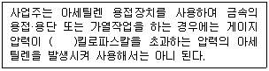
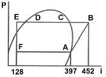
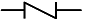
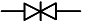
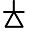
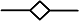
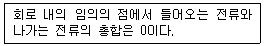

공조냉동기계기능사 (2013-10-12 기출문제)
1과목: 공조냉동안전관리
1. 산업재해 원인분류 중 직접원인에 해당되지 않는 것은?
- 불안전한 행동
- 안전보호장치 결함
- 작업자의 사기의욕 저하
- 불안전한 환경
(정답률: 73%)

2. 전기화재의 소화에 사용하기에 부적당한 것은?
- 분말 소화기
- 포말 소화기
- CO2 소화기
- 할로겐 소화기
(정답률: 64%)
3. 전기설비의 방폭성능 기준 중 용기 내부에 보호구조를 압입하여 내부압력을 유지함으로써 가연성 가스가 용기 내부로 유입되지 아니하도록 한 구조를 말하는 것은?
- 내압방폭구조
- 유입방폭구조
- 압력방폭구조
- 안전증방폭구조
(정답률: 54%)
4. 산업현장에서 위험이 잠재한 곳이나 현존하는 곳에 안전표지를 부착하는 목적으로 적당한 것은?
- 작업자의 생산능률을 저하시키기 위함
- 예상되는 재해를 방지하기 위함
- 작업장의 환경미화를 위함
- 작업자의 피로를 경감시키기 위함
(정답률: 92%)
5. 산업재해의 발생 원인별 순서로 맞는 것은?
- 불안전한 상태 > 불안전한 행동 > 불가항력
- 불안전한 행동 > 불가항력 > 불안전한 상태
- 불안전한 상태 > 불가항력 > 불안전한 행동
- 불안전한 행동 > 불안전한 상태 > 불가항력
(정답률: 67%)
6. 전기의 접지 목적에 해당되지 않는 것은?
- 화재 방지
- 설비 증설 방지
- 감전 방지
- 기기손상 방지
(정답률: 88%)
7. 냉동제조의 시설 및 기술기준으로 적당하지 못한 것은?
- 냉매설비에는 긴급 상태가 발생하는 것을 방지하기 위하여 자동제어 장치를 설치할 것
- 압축기 최종단에 설치한 안전장치는 3년에 1회 이상 압력 시험을 할 것
- 제조설비는 진동, 충격, 부식 등으로 냉매 가스가 누설되지 않을 것
- 가연성 가스의 냉동설비 부근에는 작업에 필요한 양 이상의 연소하기 쉬운 물질을 두지 않을 것
(정답률: 88%)
8. 산업안전보건기준에 관한 규칙에 의거 사다리식 통로 등을 설치하는 경우에 대한 내용으로 잘못된 것은?
- 견고한 구조로 할 것
- 발판과 벽과의 사이는 15㎝ 이상의 간격을 유지할 것
- 폭은 55㎝ 이상으로 할 것
- 발판의 간격은 일정하게 할 것
(정답률: 73%)
9. 냉동장치의 운전관리에서 운전준비사항으로 잘못된 것은?
- 압축기의 유면을 점검한다.
- 응축기의 냉매량을 확인한다.
- 응축기, 압축기의 흡입측 밸브를 닫는다.
- 전기결선, 조작회로를 점검하고, 절연저항을 측정한다.
(정답률: 81%)
10. 드라이버 작업 시 유의사항으로 올바른 것은?
- 드라이버를 정이나 지렛대 대용으로 사용한다.
- 작은 공작물은 바이스에 물리지 말고 손으로 잡고 사용한다.
- 드라이버의 날끝이 홈의 폭과 길이가 같은 것을 사용한다.
- 전기작업 시 금속부분이 자루 밖으로 나와 있어 전기가 잘 통하는 드라이버를 사용한다.
(정답률: 82%)
11. 안전모가 내전압성을 가졌다는 말은 최대 몇 볼트의 전압에 견디는 것을 말하는가?
- 600V
- 720V
- 1,000V
- 7,000V
(정답률: 71%)
12. 수공구에 의한 재해를 방지하기 위한 내용 중 적당하지 않은 것은?
- 결함이 없는 공구를 사용할 것
- 작업에 꼭 알맞은 공구가 없을 시에는 유사한 것을 대용할 것
- 사용 전에 충분한 사용법을 숙지하고 익히도록 할 것
- 공구는 사용 후 일정한 장소에 정비·보관할 것
(정답률: 91%)
13. 다음 보기의 괄호안에 알맞은 것은?

- 12.7
- 20.5
- 127
- 2⑤
(정답률: 56%)
14. 압축가스의 저장탱크에는 그 저장탱크 내용적의 몇 %를 초과하여 충전하면 안 되는가?(관련 규정 개정으로 정답이 없습니다. 여기서는 1번을 누르면 정답 처리 됩니다.)
- 90%
- 80%
- 75%
- 60%
(정답률: 89%)
15. 보일러의 사고 원인을 열거하였다. 이 중 취급자의 부주의로 인한 것은?
- 구조의 불량
- 판 두께의 부족
- 보일러수의 부족
- 재료의 강도 부족
(정답률: 82%)
2과목: 냉동기계
16. 암모니아 냉동기에서 일반적으로 압축비가 얼마 이상일 때 2단 압축을 하는가?
- 2
- 3
- 4
- 6
(정답률: 56%)
17. 공정점이 -55℃이고 저온용 브라인으로서 일반적으로 제빙, 냉장 및 공업용으로 많이 사용되고 있는 것은?
- 염화칼슘
- 염화나트륨
- 염화마그네슘
- 프로필렌글리콜
(정답률: 75%)
18. 다음 중 자연적인 냉동 방법이 아닌 것은?
- 증기분사식을 이용하는 방법
- 융해열을 이용하는 방법
- 증발잠열을 이용하는 방법
- 승화열을 이용하는 방법
(정답률: 79%)
19. 프레온 냉동장치에서 오일 포밍 현상이 일어나면 실린더 내로 다량의 오일이 올라가 오일을 압축하여 실린더 헤드부에서 이상 음이 발생하게 되는 현상은?
- 에멀죤 현상
- 동부착 현상
- 오일 포밍 현상
- 오일 해머 현상
(정답률: 80%)
20. 정상적으로 운전되고 있는 증발기에 있어서, 냉매 상태의 변화에 관한 사항 중 옳은 것은? (단, 증발기는 건식증발기 이다.)
- 증기의 건조도가 감소한다.
- 증기의 건조도가 증대한다.
- 포화액이 과냉각액으로 된다.
- 과냉각액이 포화액으로 된다.
(정답률: 59%)
21. 구조에 따라 증발기를 분류하여 그 명칭들과 동시에 그들의 주 용도를 나타내었다. 틀린 것은?
- 핀 튜브형 : 주로 0℃ 이상의 물 냉각용
- 탱크식 : 제빙용 브라인 냉각용
- 판냉각형 : 가정용 냉장고의 냉각용
- 보데로(Baudelot)식 : 우유, 각종 기름류 등의 냉각용
(정답률: 53%)
22. 실린더 내경 20㎝, 피스톤 행정 20㎝, 기통수 2개, 회전수 300rpm 인 압축기의 피스톤 배출량은 약 얼마인가?
- 182m3/h
- 201m3/h
- 226m3/h
- 263m3/h
(정답률: 56%)
23. 저장품을 동결하기 위한 동결부하 계산에 속하지 않는 것은?
- 동결 전 부하
- 동결 후 부하
- 동결 잠열
- 환기 부하
(정답률: 76%)
24. 관을 절단하는데 사용하는 공구는?
- 파이프 리머
- 파이프 커터
- 오스터
- 드레서
(정답률: 88%)
25. 다음 중 입력신호가 모두 1일 때만 출력신호가 0인 논리게이트는?
- AND 게이트
- OR 게이트
- NOR 게이트
- NAND 게이트
(정답률: 56%)
26. 냉동기유의 구비 조건으로 맞지 않는 것은?
- 냉매와 접하여도 화학적 작용을 하지 않을 것
- 왁스 성분이 많을 것
- 유성이 좋을 것
- 인화점이 높을 것
(정답률: 86%)
27. 압축기에서 보통 안전밸브의 작동압력으로 옳은 것은?
- 저압 차단 스위치 작동 압력과 같게 한다.
- 고압 차단 스위치 작동 압력보다 다소 높게 한다.
- 유압 보호 스위치 작동 압력과 같게 한다.
- 고·저압 차단 스위치 작동 압력보다 낮게 한다.
(정답률: 61%)
28. 다음 모리엘 선도에서의 성적계수는 약 얼마인가?

- 2.4
- 4.9
- 5.4
- 6.3
(정답률: 68%)
29. 다음 기호 중 콕의 도시기호는?




(정답률: 64%)
30. 흡수식냉동기에서 냉매순환과정을 바르게 나타낸 것은?
- 재생(발생)기 → 응축기 → 냉각(증발)기 → 흡수기
- 재생(발생)기 → 냉각(증발)기 → 흡수기 → 응축기
- 응축기 → 재생(발생)기 → 냉각(증발)기 → 흡수기
- 냉각(증발)기 → 응축기 → 흡수기 → 재생(발생)기
(정답률: 75%)
31. 온도 자동팽창 밸브에서 감온통의 부착위치는?
- 팽창밸브 출구
- 증발기 입구
- 증발기 출구
- 수액기 출구
(정답률: 68%)
32. 응축기 중 외기습도가 응축기 능력을 좌우하는 것은?
- 횡형 쉘엔 튜브식 응축기
- 이중관식 응축기
- 7통로식 응축기
- 증발식 응축기
(정답률: 59%)
33. 관 또는 용기 안의 압력을 항상 일정한 수준으로 유지하여 주는 밸브는?
- 릴리프 밸브
- 체크 밸브
- 온도조정 밸브
- 감압 밸브
(정답률: 54%)
34. 시트 모양에 따라 삽입형, 홈꼴형, 랩형 등으로 구분되는 배관의 이용방법은?
- 나사 이음
- 플레어 이음
- 플랜지 이음
- 납땜 이음
(정답률: 63%)
35. 불응축가스의 침입을 방지하기 위해 액순환식 증발기와 액펌프 사이에 부착하는 것은?
- 감압 밸브
- 여과기
- 역지 밸브
- 건조기
(정답률: 60%)
36. 어떤 물질의 산성, 알칼리성 여부를 측정하는 단위는?
- CHU
- RT
- pH
- B.T.U
(정답률: 89%)
37. 0℃의 물 1kg을 0℃의 얼음으로 만드는데 필요한 응고잠열은 대략 얼마 정도인가?
- 80 kcal/kg
- 540 kcal/kg
- 100 kcal/kg
- 50 kcal/kg
(정답률: 63%)
38. 냉동장치의 온도 관계에 대한 사항 중 올바르게 표현한 것은? (단, 표준냉동 사이클을 기준으로 할 것)
- 응축온도는 냉각수 온도보다 낮다.
- 응축온도는 압축기 토출가스 온도와 같다.
- 팽창밸브 직후의 냉매온도는 증발온도보다 낮다.
- 압축기 흡입가스 온도는 증발온도와 같다.
(정답률: 42%)
39. 아래 보기에서 설명하고 있는 법칙으로 맞는 것은?

- 키르히호프의 제1법칙
- 키르히호프의 제2법칙
- 쥴의 법칙
- 앙페르의 오른나사법칙
(정답률: 76%)
40. 옴의 법칙에 대한 설명으로 적절한 것은?
- 도체에 흐르는 전류(I)는 전압(V)에 비례한다.
- 도체에 흐르는 전류(I)는 저항(R)에 비례한다.
- 도체에 흐르는 전압(V)는 저항(R)의 값과는 상관없다.
- 도체에 흐르는 전류는 I=R/V[A]이다.
(정답률: 78%)
41. 용적형 압축기에 대한 설명으로 맞지 않는 것은?
- 압축실내의 체적을 감소시켜 냉매의 압력을 증가시킨다.
- 압축기의 성능은 냉동능력, 소비동력, 소음, 진동값 및 수명 등 종합적인 평가가 요구된다.
- 압축기의 성능을 측정하는데 유용한 두 가지 방법은 성능계수와 단위 냉동능력당 소비동력을 측정하는 것이다.
- 개방형 압축기의 성능계수는 전동기와 압축기의 운전효율을 포함하는 반면, 밀폐형 압축기의 성능계수에는 전동기효율이 포함되지 않는다.
(정답률: 73%)
42. 터보 냉동기의 구조에서 불응축 가스 퍼어지, 진공작업, 냉매 재생 등의 기능을 갖추고 있는 장치는?
- 플로우트 챔버 장치
- 추기회수 장치
- 엘리미네이터 장치
- 전동 장치
(정답률: 50%)
43. 고체에서 기체로 상태가 변화할 때 필요로 하는 열을 무엇이라 하는가?
- 증발열
- 융해열
- 기화열
- 승화열
(정답률: 70%)
44. 스윙(swing)형 체크밸브에 관한 설명으로 틀린 것은?
- 호칭치수가 큰 관에 사용된다.
- 유체의 저항이 리프트(lift)형보다 적다.
- 수평배관에만 사용할 수 있다.
- 핀을 축으로 하여 회전시켜 개폐한다.
(정답률: 76%)
45. 냉동장치 내에 냉매가 부족할 때 일어나는 현상으로 옳은 것은?
- 흡입관에 서리가 보다 많이 붙는다.
- 토출압력이 높아진다.
- 냉동능력이 증가한다.
- 흡입압력이 낮아진다.
(정답률: 49%)
3과목: 공기조화
46. 온풍난방의 특징을 바르게 설명한 것은?
- 예열시간이 짧다.
- 조작이 복잡하다.
- 설비비가 많이 든다.
- 소음이 생기지 않는다.
(정답률: 79%)
47. 겨울철 창면을 따라서 존재하는 냉기에 의해 외기와 접한 창면에 접해있는 사람은 더욱 추위를 느끼게 되는 현상을 콜드 드래프트라 한다. 이 콜드 드래프트의 원인으로 볼 수 없는 것은?
- 인체 주위의 온도가 너무 낮을 때
- 주위벽면의 온도가 너무 낮을 때
- 창문의 틈새가 많을 때
- 인체 주위 기류속도가 너무 느릴 때
(정답률: 76%)
48. 일반적으로 덕트의 종횡비(aspect ratio)는 얼마를 표준으로 하는가?
- 2 : 1
- 6 : 1
- 8 : 1
- 10 : 1
(정답률: 63%)
49. 복사난방의 특징이 아닌 것은?
- 외기온도의 급 변화에 따른 온도조절이 곤란하다.
- 배관시공이나 수리가 비교적 곤란하고 설비비용이 비싸다
- 공기의 대류가 많아 쾌감도가 나쁘다.
- 방열기가 불필요하다.
(정답률: 69%)
50. 공기조화 방식의 중앙식 공조방식에서 수-공기방식에 해당되지 않는 것은?
- 이중 덕트방식
- 팬 코일 유닛방식(덕트병용)
- 유인 유닛방식
- 복사 냉난방 방식(덕트병용)
(정답률: 52%)
51. 다음 난방방식에 대한 설명으로 틀린 것은?
- 온풍난방은 습도를 가습 또는 감습할 수 있는 장치를 설치할 수 있다.
- 증기난방의 응축수환수관 연결 방식은 습식과 건식이 있다.
- 온수난방의 배관에는 팽창탱크를 설치하여야 하며 밀폐식과 개방식이 있다.
- 복사난방은 천정이 높은 실(室)에는 부적합하다.
(정답률: 66%)
52. 공기상태에 관한 내용 중 틀린 것은?
- 포화습공기의 상대습도는 100%이며 건조공기의 상대습도는 0%가 된다.
- 공기를 가습, 감습하지 않으면 노점온도 이하가 되어도 절대습도는 변함이 없다.
- 습공기 중의 수분 중량과 포화습공기 중의 수분의 비를 상대습도라 한다.
- 공기 중의 수증기가 분리되어 물방울이 되기 시작하는 온도를 노점온도라 한다.
(정답률: 51%)
53. 수조내의 물에 초음파를 가하여 작은 물방울을 발생시켜 가습을 행하는 초음파 가습장치는 어떤 방식에 해당 하는가?
- 수분무식
- 증기 발생식
- 증발식
- 에어와셔식
(정답률: 62%)
54. 개별식 공기조화방식으로 볼 수 있는 것은?
- 사무실 내에 패케이지형 공조기를 설치하고, 여기에서 조화된 공기는 패케이지 상부에 있는 취출구로 실내에 송풍한다.
- 사무실 내에 유인유닛형 공조기를 설치하고, 외부의 공기조화기로부터 유인유닛에 공기를 공급한다.
- 사무실 내에 팬코일 유닛형 공조기를 설치하고, 외부의 열원기기로부터 팬코일 유닛에 냉·온수를 공급한다.
- 사무실 내에는 덕트만 설치하고, 외부의 공기조화기로부터 덕트 내에 공기를 공급한다.
(정답률: 57%)
55. 유체의 속도가 20m/s일 때 이 유체의 속도수두는 얼마인가?
- 5.1m
- 10.2m
- 15.5m
- 20.4m
(정답률: 45%)
56. 어떤 보일러에서 발생되는 실제증발량을 1000 kg/h, 발생 증기의 엔탈피를 614 kcal/kg, 급수의 온도를 20℃라 할 때, 상당증발량은 얼마인가? (단, 증발잠열은 540 kcal/kg으로 한다.)
- 847 kg/h
- 1,100 kg/h
- 1,250 kg/h
- 1,450 kg/h
(정답률: 39%)
57. 풍량 조절용으로 사용되지 않는 댐퍼는?
- 방화 댐퍼
- 버터플라이 댐퍼
- 루버 댐퍼
- 스플릿 댐퍼
(정답률: 70%)
58. 열이 이동되는 3가지 기본현상(형식)이 아닌 것은?
- 전도
- 관류
- 대류
- 복사
(정답률: 74%)
59. 실내 필요 환기량을 결정하는 조건과 거리가 먼 것은?
- 실의 종류
- 실의 위치
- 재실자의 수
- 실내에서 발생하는 오염물질 정도
(정답률: 58%)
60. 송풍기의 특성곡선에 나타나 있지 않는 것은?
- 효율
- 축동력
- 전압
- 풍속
(정답률: 42%)